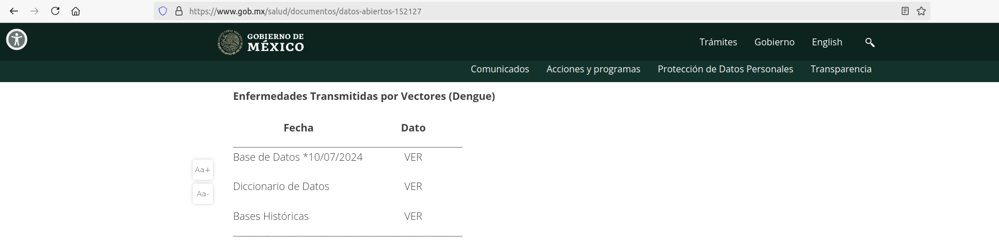
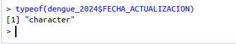
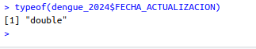
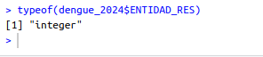
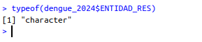

Data wrangling: Preparando datos para analizar

This work is licensed under a Creative Commons Attribution 4.0 International License.
Objetivo
El objetivo es ver como descargar datos abiertos para crear un dataframe, y en dado caso que la información sea muy grande, crear una base de datos de sql para poder analizarla con mayor comodidad. Utilizaremos R para preparar la información.
Primer paso
Ingresaremos a esta página https://www.gob.mx/salud/documentos/datos-abiertos-152127 y descargaremos, para este ejemplo, los datos de Bases de Datos de Enfermedades Transmitidas por Vectores (Dengue).

Ahora descargaremos los Datos Abiertos de 2024.
Abrir la Base desde RStudio
Importaremos los datos que descargamos creando una dataframe.
dengue_2024 <- read.csv('dengue_abierto.csv')
Hay datos que son fechas, pero al importarlos los considera cadenas.

Entonces todas las columnas que sean fechas las reasignaremos usando la función as.Date().
dengue_2024$FECHA_ACTUALIZACION <- as.Date(dengue_2024$FECHA_ACTUALIZACION)

Muchas veces para hacer análisis por municipios abarcando varios estados se necesita crear una variable que concatene la clave de la entidad y del municipio, pero estas claves fueron importadas como número, entonces las haremos cadena y completando el número de dígitos, dos dígitos para entidad y tres para muniipio.

dengue_2024$ENTIDAD_RES <- ifelse(nchar(dengue_2024$ENTIDAD_RES) == 1, paste('0', dengue_2024$ENTIDAD_RES, sep = ''), dengue_2024$ENTIDAD_RES)

Ahora ya podemos guardar el dataframe para seguir trabajando sin tener que preparar la información otra vez.
save(dengue_2024, file = 'dengue.RDATA')
Guardar como base de datos SQL
Algunas veces la base será muy grande por tener millones de registros, por lo cual conviene guardar la información como una base de datos, y así solo consultar la información que se va a utilizar.
require("RSQLite")
# Set up database
drv <- dbDriver("SQLite")
archivo <- "dengue.db"
con <- dbConnect(drv, dbname = "dengue.db")
dbWriteTable(con, "dengue_2024", as.data.frame(dengue_2024))
dbDisconnect(con)